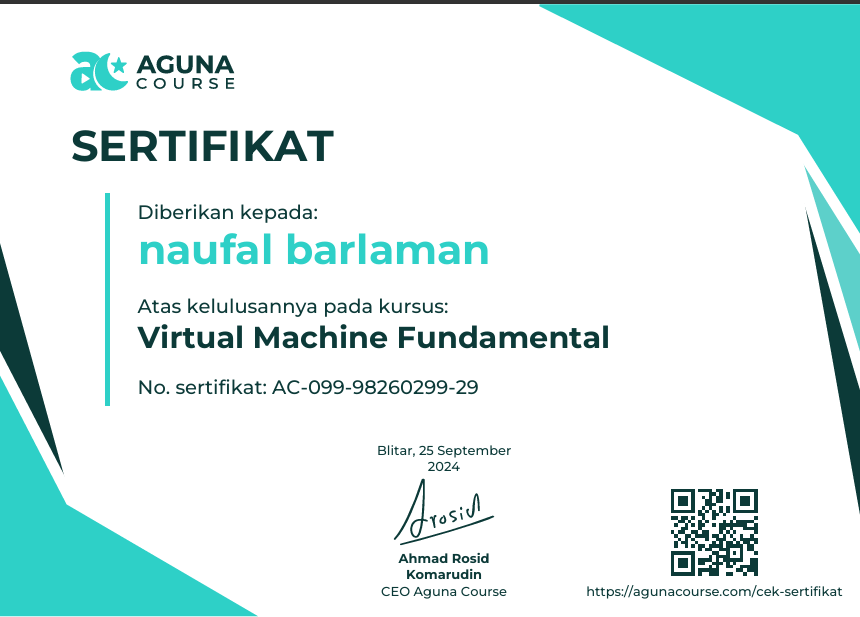
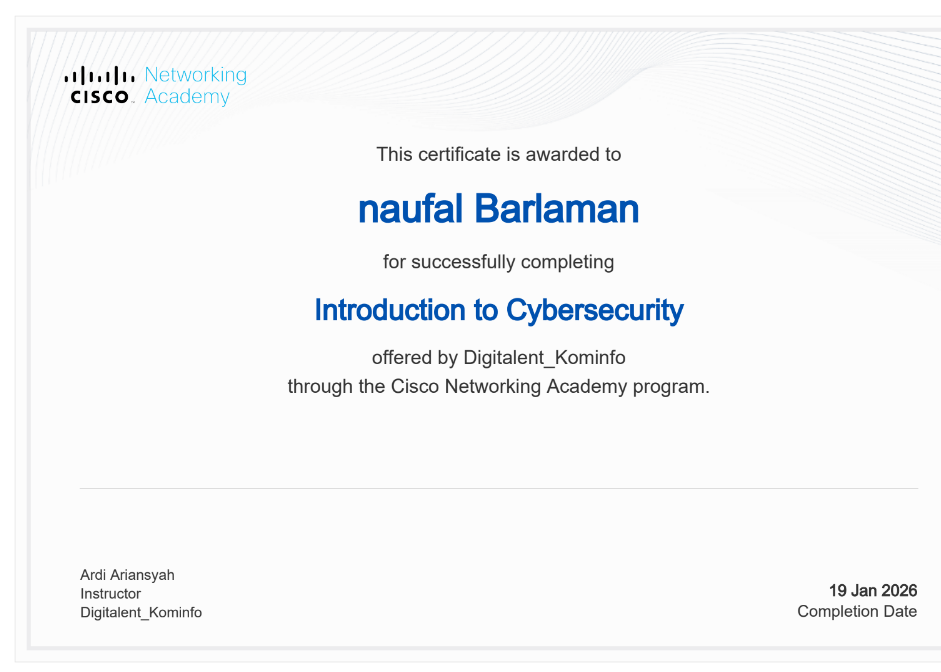

Halo, Saya 👋
Saya adalah siswa TJKT yang memiliki minat di bidang Networking, MikroTik, Cisco, Linux Server, AWS Cloud, dan Web Development. Saya terus belajar dan mengembangkan kemampuan agar menjadi Network Engineer dan Cloud Engineer yang profesional.
Mengenal lebih dekat siapa saya.
Saya merupakan siswa SMK Wikrama Bogor jurusan Teknik Jaringan Komputer dan Telekomunikasi (TJKT). Saya memiliki minat dalam bidang instalasi jaringan komputer, konfigurasi MikroTik, Linux Server, AWS Cloud, serta pengembangan website.
Saya terbiasa melakukan instalasi kabel jaringan, konfigurasi router MikroTik, troubleshooting jaringan, administrasi server Linux, dan membangun website sederhana. Saya terus belajar agar siap menjadi Field Network Technician, IT Support, atau Network Engineer.
Saya senang mempelajari teknologi baru, mengerjakan proyek, serta mengembangkan kemampuan agar siap menghadapi dunia kerja di bidang IT.
Kemampuan yang saya pelajari selama di SMK Wikrama Bogor.
Konfigurasi jaringan LAN, WAN, TCP/IP, DHCP, DNS, NAT, Routing, dan Troubleshooting.
DHCP Server, Firewall, NAT, Queue, Routing, Hotspot dan konfigurasi RouterOS.
Penarikan kabel UTP, Crimping RJ45, Faceplate, Patch Panel dan Rack Server.
Apache, SSH, FTP, DNS Server, User Management dan Samba Server.
Deploy EC2, VPC, Security Group, Elastic IP dan Web Server.
HTML, CSS, JavaScript serta pembuatan website portfolio.
Beberapa pengalaman praktik yang pernah saya kerjakan selama belajar di SMK Wikrama Bogor.
Melakukan penarikan kabel UTP, crimping RJ45, pemasangan perangkat jaringan, serta pengujian koneksi menggunakan LAN Tester.
Konfigurasi DHCP Server, NAT, Firewall, Routing, dan manajemen jaringan menggunakan RouterOS MikroTik.
Membuat topologi jaringan, konfigurasi VLAN, Static Routing, dan simulasi jaringan menggunakan Cisco Packet Tracer.
Mengenal komponen Fiber Optic, proses instalasi dasar, serta memahami fungsi dan penggunaan jaringan FO.
Pemasangan kamera CCTV, konfigurasi DVR, serta pengecekan koneksi agar sistem keamanan berjalan dengan baik.
Melakukan pengecekan koneksi jaringan, identifikasi gangguan, dan perbaikan dasar pada perangkat jaringan.
Beberapa sertifikat yang saya peroleh selama mengikuti pelatihan dan pembelajaran.

Sertifikat pembelajaran dasar jaringan komputer melalui Cisco Networking Academy.

Sertifikat pelatihan dasar Cyber Security mengenai keamanan jaringan dan keamanan informasi.
Tertarik untuk bekerja sama atau punya pertanyaan? Silakan hubungi saya melalui kontak di bawah ini.
barlamannaufal888@gmail.com
Bogor, Indonesia
Muhamad Naufal Barlaman